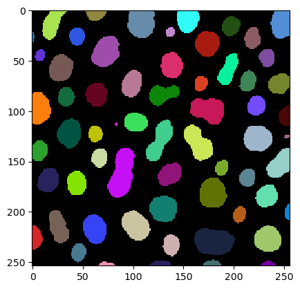

Counting bright objects in images#
A common use case for image processing in the biology context is counting blobs of high signal intensity surrounded by a low intensity background. Thresholding is the method of choice in this scenario. We demonstrate it with Otsu’s thresholding method (Otsu et al., IEEE Transactions on Systems, Man, and Cybernetics, Vol. 9 (1), 1979)
import pyclesperanto_prototype as cle
from skimage.io import imread, imsave, imshow
import matplotlib
import numpy as np
# initialize GPU
cle.select_device("GTX")
C:\Users\haase\mambaforge\envs\tea2024\lib\site-packages\pyclesperanto_prototype\_tier0\_device.py:77: UserWarning: No OpenCL device found with GTX in their name. Using gfx1035 instead.
warnings.warn(f"No OpenCL device found with {name} in their name. Using {device.name} instead.")
<gfx1035 on Platform: AMD Accelerated Parallel Processing (2 refs)>
# load data
image = imread('data/blobs.tif')
print("Loaded image size: " + str(image.shape))
cle.imshow(image)
Loaded image size: (254, 256)
We just setup a simple image processing workflow that leads to a label image.
# process the image
blurred = cle.gaussian_blur(image, sigma_x=1, sigma_y=1)
binary = cle.threshold_otsu(blurred)
labeled = cle.connected_components_labeling_box(binary)
# show result
cle.imshow(labeled, labels=True)

The maximum intensity in a label image corresponds to the number of objects.
num_labels = cle.maximum_of_all_pixels(labeled)
print("Number of objects in the image: " + str(num_labels))
Number of objects in the image: 62.0
Exercise#
Remove the labels that touch the image border and count the objects again.